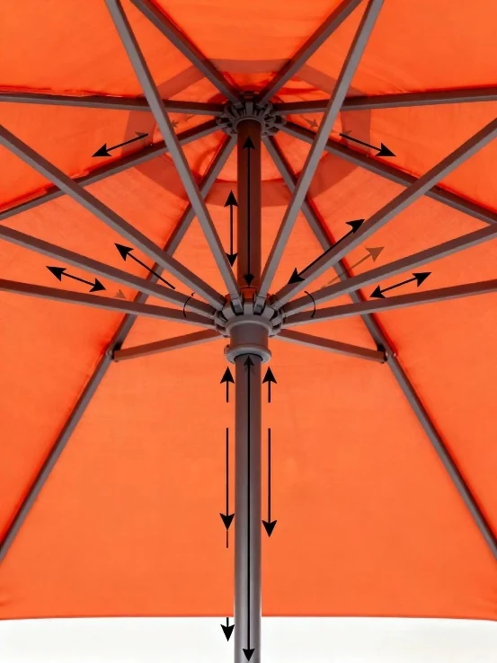
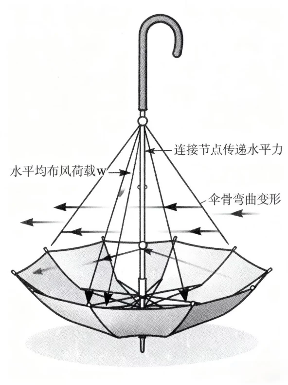
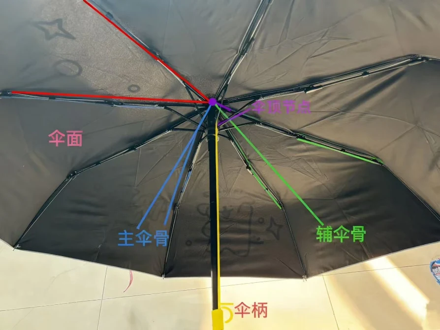
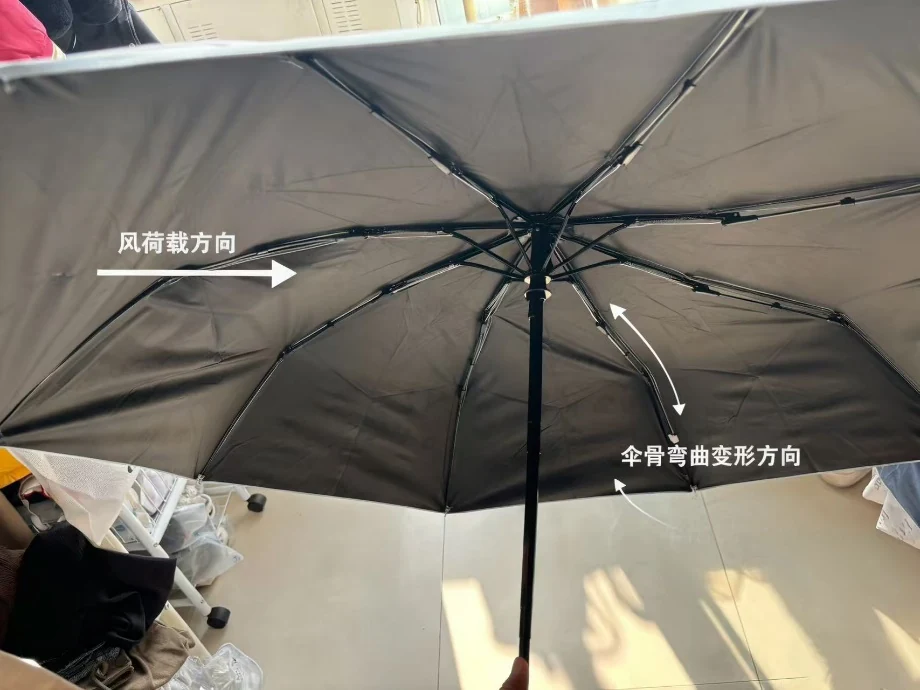
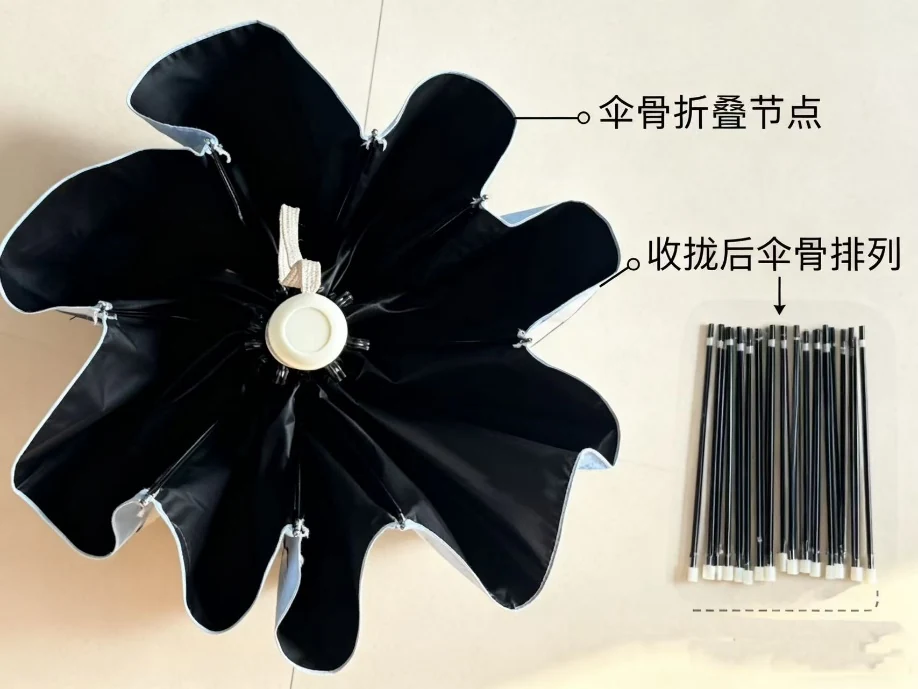
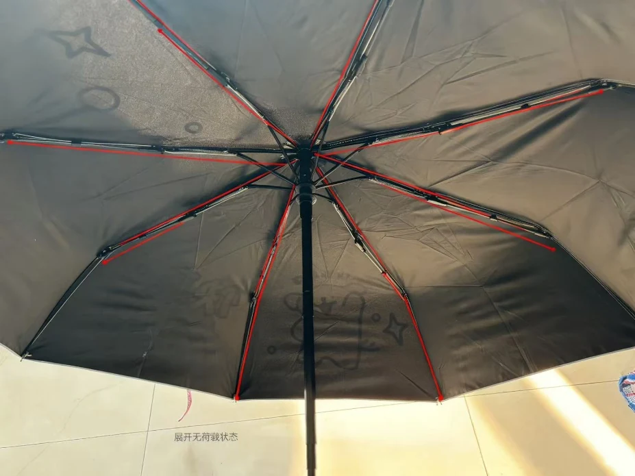
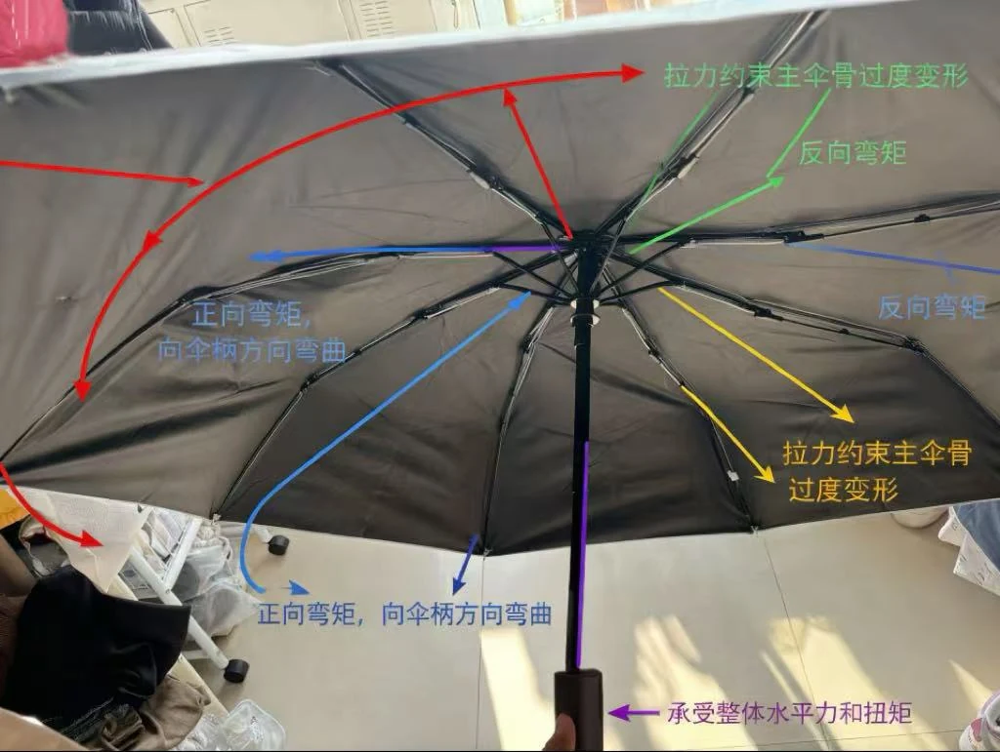
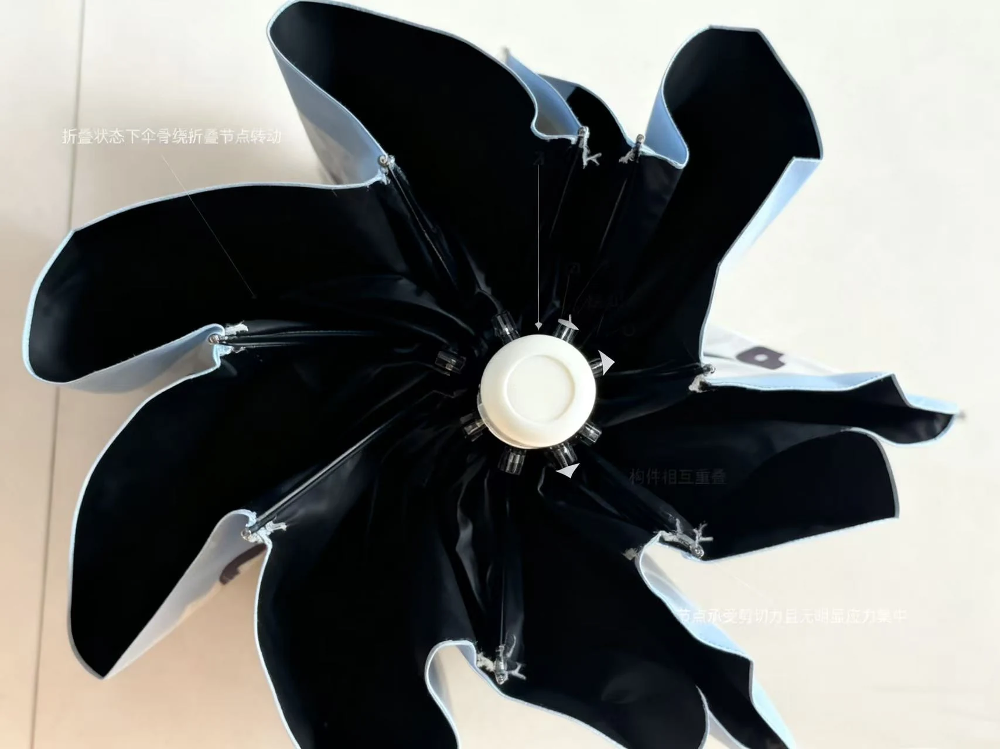

大连交通大学 · 智能建造23
我的原作在生活中感知结构概念——雨伞
刘熙文
雨伞的力学结构设计
（1）表达力学问题
意义：雨伞需在打开状态下抵抗风荷载和自身重量，保证结构不发生破坏或变形过大，核心力学问题是如何通过伞骨的结构布置，将伞面承受的风荷载和竖向荷载有效传递至伞柄，同时保证伞面展开后的平整度和稳定性。
影响因素：伞骨的数量、截面尺寸、材料弹性模量、伞骨与伞柄的连接方式、伞面的抗拉强度。
趋势：采用高强度轻质材料，优化伞骨的分布式布局，提升抗风能力的同时减轻整体重量。
力学图示：
竖向荷载（自重）：伞面和伞骨自重通过伞骨节点传递至伞柄，伞骨承受弯矩和剪力；

水平风荷载：伞面承受水平均布风荷载 w，通过伞骨传递至伞柄，伞骨产生弯曲变形，伞骨之间的连接节点传递水平力，避免局部破坏。

（2）生活中体现
照片：（自行拍摄四张照片）
雨伞完全展开状态

雨伞承受风荷载模拟

雨伞折叠状态

受力 / 变形标注：
展开无荷载状态：伞骨呈辐射状均匀分布，伞顶节点为中心受力点，各伞骨受力均匀，无明显变形；

水平风荷载作用下：迎风侧伞骨承受正向弯矩，向伞柄方向弯曲，背风侧伞骨承受反向弯矩，辅伞骨通过拉力约束主伞骨的过度变形，伞柄承受整体水平力和扭矩；

折叠状态：伞骨绕折叠节点转动，构件相互重叠，节点承受剪切力，无明显应力集中。

配文说明：雨伞的主伞骨呈辐射状分布，将伞面承受的荷载均匀传递至伞柄，避免局部受力过大；主伞骨采用空心圆形截面，在减轻重量的同时，相比实心截面具有更大的惯性矩，提升抗弯刚度，类似《材料力学》中 “空心轴比实心轴抗扭刚度大” 的原理；辅伞骨与主伞骨形成三角形支撑，限制主伞骨的侧向变形，增强整体稳定性；伞顶节点为中心铰接点，允许伞骨转动展开，同时传递各方向内力，伞柄作为核心受力构件，承受所有荷载的合力，保证结构整体平衡。
（3）对照《结构设计原理》内容
荷载传递路径设计：雨伞的辐射状伞骨布局，实现了荷载的均匀传递，与 “结构传力路径直接化” 理念一致，避免荷载集中导致局部破坏，类似钢筋混凝土楼板中 “双向板的受力钢筋双向布置”，均匀分散荷载；
构件截面选型：空心圆形截面的伞骨，利用 “截面惯性矩与材料分布距离中性轴的距离平方成正比” 的原理，将材料布置在远离中性轴的部位，在相同材料用量下获得更大的抗弯刚度，与钢筋混凝土梁中 “受拉钢筋布置在梁下部远离中性轴位置” 的设计逻辑相通；
稳定增强设计：辅伞骨与主伞骨形成的三角形约束，相当于结构设计中的 “次梁与主梁的连接”，通过次要构件限制主要构件的变形，提升整体结构的刚度和稳定性，避免主伞骨因弯曲变形过大而失效；
节点受力设计：伞顶节点和折叠节点的铰接设计，平衡了结构的灵活性和力学传递需求，类似钢结构中的 “铰接节点”，允许构件转动以实现折叠功能，同时保证内力有效传递，避免节点处应力集中。
这是一份便于网页阅读的原作视图，保留提交内容的文字、图片和基本顺序；公开页面不显示学号。